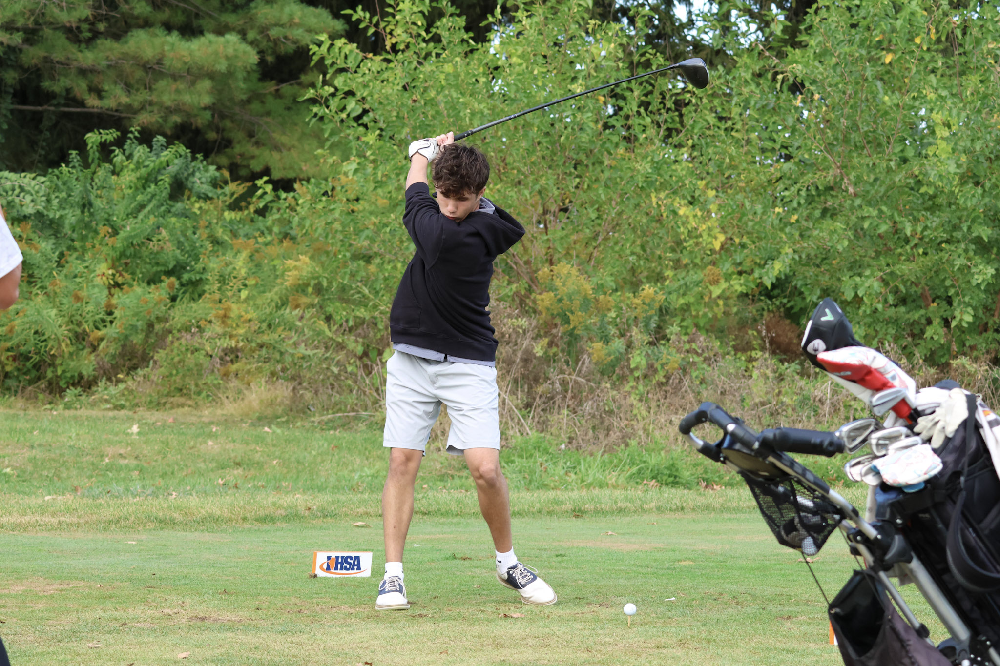
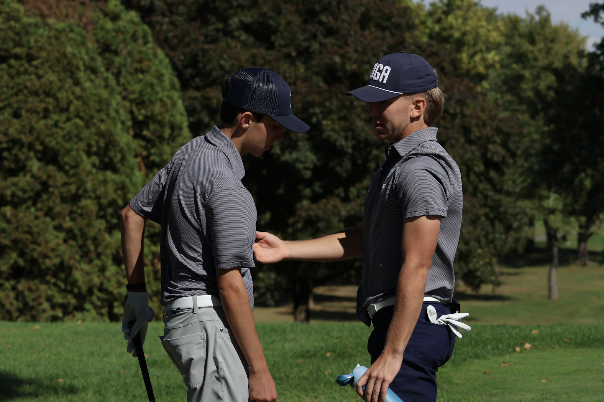

About Our Team
The Francis W Parker Boys Golf Team represents one of Chicago's premier independent schools. Our program combines competitive athletics with academic achievement and personal growth.
We compete in some of the toughest competitions in Illinois high school golf for a high school who only consists of 337 students and have qualified for state championships in both 1A (2024) and 2A (2025) divisions.
Our Goal
A successful high school golf team strives to develop both individual skills and collective strength throughout each season. The Francis W Parker Boys Golf Team aims to consistently lower scores through dedicated practice, master course management under pressure, and build the mental resilience that golf demands. Beyond personal improvement, the goal is to compete at the highest level possible—whether that's winning conference championships, advancing to state tournaments, or simply outperforming last year's results. Equally important is fostering a supportive team culture where players encourage each other, maintain integrity through honest scorekeeping, and represent their school with sportsmanship. Ultimately, the team seeks to create an environment where every member finishes the season as a better golfer and teammate than when they started.
